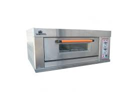

Product supplies and equipements

Coffee ground waste

oven

Advantage: The cups are biodegradable; they have the ability to decompose after interactions with biological elements. Benefit: Reducing carbon footprint isn’t a story we keep on hearing from experts. With the regular use of biodegradable coffee cups in cafeterias, offices, homes, etc., the amount of carbon footprint also decreases. Prevailing apprehensions over climate change can’t be subdued dramatically. But we have the opportunity to conserve the earth by doing a small bit of good work. In simple words, saving the environment by reducing plastic waste.
Advantage: The cups are biodegradable; they have the ability to decompose after interactions with biological elements. Benefit: Reducing carbon footprint isn’t a story we keep on hearing from experts. With the regular use of biodegradable coffee cups in cafeterias, offices, homes, etc., the amount of carbon footprint also decreases. Prevailing apprehensions over climate change can’t be subdued dramatically. But we have the opportunity to conserve the earth by doing a small bit of good work. In simple words, saving the environment by reducing plastic waste.
Advantage: The cups are biodegradable; they have the ability to decompose after interactions with biological elements. Benefit: Reducing carbon footprint isn’t a story we keep on hearing from experts. With the regular use of biodegradable coffee cups in cafeterias, offices, homes, etc., the amount of carbon footprint also decreases. Prevailing apprehensions over climate change can’t be subdued dramatically. But we have the opportunity to conserve the earth by doing a small bit of good work. In simple words, saving the environment by reducing plastic waste.